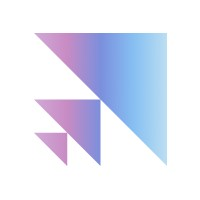

MohammadHossein Rezaei

I am a Machine Learning Research Engineer at Scale AI , where I work on post-training and evaluation of LLMs. I worked on OnlineRubrics, an approach for post-training LLMs with evolving rubrics to improve alignment in tasks without verifiable ground-truth.
I earned a B.S. in Computer Science from the University of Arizona . I was a member of the Computational Language Understanding (CLU) Lab, advised by Eduardo Blanco, where I worked on making SLMs more robust against negation by further pre-training and paraphrasing in affirmative terms.
Previously, I was a research intern at Stanford University  in the SALT Lab advised by Diyi Yang. There, I co-created EgoNormia, a benchmark for evaluating physical-social norm understanding in vision-language models.
in the SALT Lab advised by Diyi Yang. There, I co-created EgoNormia, a benchmark for evaluating physical-social norm understanding in vision-language models.
news
| Dec 19, 2025 | I graduated Summa Cum Laude with a B.S. in Computer Science and a Minor in Mathematics from the University of Arizona. I delivered the keynote address at the College of Science Commencement Ceremony. |
|---|---|
| Dec 17, 2025 | I was selected as the Overall Outstanding Senior for both the Computer Science Department and the College of Science. |
| Oct 09, 2025 | Check out my internship project at Scale AI: Online Rubrics Elicitation from Pairwise Comparisons. |
| May 27, 2025 | I joined Scale AI as a Research Intern, Post-training. |
| May 15, 2025 | EgoNormia: Benchmarking Physical Social Norm Understanding has been accepted to ACL 2025 Findings. |
| Jan 22, 2025 | My paper, Making Language Models Robust Against Negation, has been accepted to NAACL 2025. See you in Albuquerque! |
| Aug 20, 2024 | I participated in the LINXS Summer Research Program at Stanford University in the summer of 2024 as an undergraduate visiting research intern. I was advised by Diyi Yang in the SALT Lab. |
| May 16, 2024 | My paper, Paraphrasing in Affirmative Terms Improves Negation Understanding, has been accepted to ACL 2024. |
| Dec 06, 2023 | Our paper on Interpreting Indirect Answers to Yes-No Questions in Multiple Languages has been accepted to EMNLP Findings 2023. |
| Jul 01, 2023 | I participated in the SoNIC Summer Research Workshop 2023 at Cornell University. |